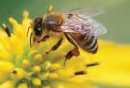
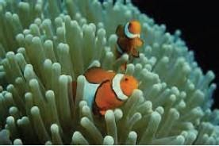
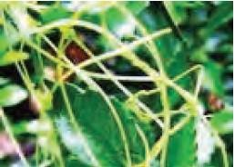

Bab 8 Interaksi Makhluk Hidup dengan Lingkungan
Pengertian Lingkungan
Istilah Lingkungan berasal dari kata Environment yaang memiliki makna physial, chemical, dan biotic condition surrounding and organism. Lingkungan dapat diartikan sebagai segala sesuatu diluar individu, yang merupakan sistem yang kompleks, dan dapat mempengaruhi satu dengan yang lain. Kondisi saling mempenaruhi ini membuat lingkungan selal dinamis dan dapt berubah- ubah sesuai kondisi. Perubahan lingkungan dapat terjadi karena makhluk hidup dalam lingkungan tersebut. Lingkungan terdiri atas komponen berikut :
-
Komponen Biotik : komponen yang terdiri dari manusia, hewan, tumuhan, dan mikroorganisme.
-
Komponen abiotik : komponen yang terdiri dari benda- bnda tak hidup diantaranya air, tanah, udara, dan cahaya.
Hal-hal yang Ditemukan dalam Suatu Lingkungan
Setiap makhluk hidup memerlukan lingkungan tertentu sebagai tempat hidupnya. Tahukah kamu, tempat hidup dinamakan habitat. Dalam suatu habitat, terdapat berbagai jenis makhluk hidup (biotik) dan makhluk tak hidup (abiotik).
Tempat yang kamu kunjungi merupakan suatu habitat bagi suatu makhluk hidup. Pada tempat tersebut akan terjadi interaksi antara makhluk hidup dan makhluk tak hidup.
Interaksi dalam Ekosistem Membentuk Pola
Setiap organisme tidak dapat hidup sendiri dan selalu bergantung pada organisme lain dan lingkungannya. Saling ketergantungan ini akan membentuk pola interaksi. Pola interaksi terjadi antara komponen biotik dan komponen abiotik serta antara komponen abiotik dengan komponen abiotik.
Interaksi antar makhluk hidup dapat terjadi melalui peristiwa makan dan dimakan seperti rantai makanan, jaring – jaring makanan dan piramida makanan serta melalui bentuk hidup bersama yaitu simbiosis. Simbiosis ada 3 yaitu : simbiosis mutualisme, komensalisme dan parasitisme.
| Jenis Simbiosis | Penjelasan | Contoh | Gambar |
|---|---|---|---|
| Simbiosis Mutualisme |
Simbiosis mutualisme adalah hubungan dua jenis individu yang saling memberikan keuntungan oleh kedua individu tersebut |
Bunga matahari dengan lebah |
 |
| Simbiosis Komensalisme |
Simbiosis komensalisme adalah hubungan interaksi dua jenis individu yang memberikan keuntungan pada salah satu pihak, tapi pihak lain tidak mendapat kerugian. |
Ikan badut dan anemon laut |
 |
| Simbiosis Parasitisme |
Simbiosis parasitisme adalah hubungan interaksi dua jenis individu yang memberikan keuntungan pada salah satu pihak dan memberi kerugian pada pihak lain (inang). |
Tumbuhan tali putri dengan inangnya |
 |
Pola Interaksi Manusia Mempengaruhi Ekosistem
Manusia juga memiliki interaksi dengan lingkungan. Berubahnya tatanan lingkungan oleh kegiatan manusia atau oleh proses alam menyebabkan kualitas lingkungan turun sampai ke tingkat tertentu, akibatnya lingkungan menjadi kurang berfungsi dengan peruntukannya.